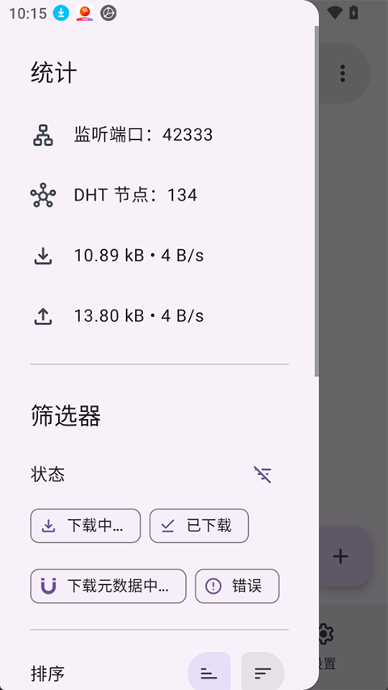
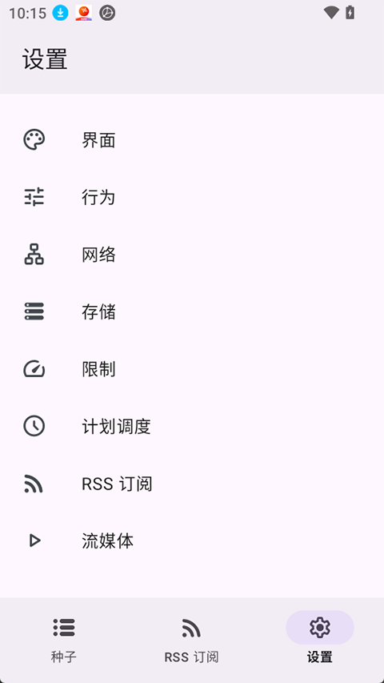

LibreTorrent 内核拆解：一个 Android BT 客户端的设计取舍
从 libtorrent 内核选型、网络层自适应、到 Material Design 的界面纪律，深度解析 LibreTorrent 为什么能在 Android 上稳定跑满带宽。
为什么同一份 BT 种子，在电脑上能轻松拉满带宽，到了 Android 手机上就总是差一口气？后台被杀、速度上不去、文件下完不知道存哪——这些抱怨我听了不止一次。去 LibreTorrent官网 看它的定位就很清楚——这是目前 Android 上少数真正能解决这些痛点的 BT 客户端之一，而它做到这一切的方式，藏在一套看似不激进、但每一步都经过深思熟虑的设计里。
内核选型：用 C++ 而不是 Java，到底赚了什么亏了什么
从 官方下载 拿到的 APK 里就能看到 NDK 编译出来的 so 文件——LibreTorrent 的核心下载引擎用的是 libtorrent，一个用 C++ 写的成熟 BT 库。这不是一个显而易见的选择，Android 生态天然偏向 Java/Kotlin，直接写 Java 实现的话编译链更短、调试更方便、和系统 API 的交互也更自然。
但 C++ 内核带来的性能优势是决定性的。BT 协议本身就是高并发、高 IO 的场景：同时维护上百个 TCP 连接、持续读写大量磁盘块、实时计算 SHA1 哈希校验数据完整性。这些操作如果放在 Java 层，GC 暂停和对象分配的开销会直接体现在下载速度的波动上——尤其当种子健康度好、连接数多的时候，这种波动会被放大到肉眼可见的程度。libtorrent 用原生线程模型避开了这些问题，让下载速度曲线更平稳。
代价也很明确：C++ 代码需要 NDK 编译，APK 体积比纯 Java 实现大约 10MB 左右；调试时也无法直接用 Android Studio 的 Java 调试器，得切到 GDB 看 native 堆栈。对用户来说这些都是黑盒，但对开发者意味着维护成本翻倍。

网络层：从 DHT 到端口映射，它怎么让你的手机被全世界发现
BT 下载的核心困境是 NAT——家庭路由器把内网设备藏了起来，外网的做种节点根本不知道该往哪发数据。LibreTorrent 解决这个问题的思路是多重保障，能用哪个用哪个。
第一层是 DHT（分布式哈希表），相当于一张去中心化的电话簿，节点之间互相传递彼此的联系方式。这层不依赖任何中心化服务器，只要网络里有足够多的节点就能自维持。LibreTorrent 默认开启 DHT，同时启用 PeX（Peer Exchange）让已连接的同伴主动分享新的同伴地址——两者配合能快速扩大可用连接池。
第二层是 µTP，一个专为 UDP 设计的轻量传输协议。UDP 比 TCP 头部开销小，在移动网络下丢包时的重传机制更灵活，不会像 TCP 那样因为一个包丢了就整条连接进入拥塞控制。速度忽快忽慢的现象，往往就是 µTP 的自动拥塞控制在起作用——它在实时探测当前网络的可用带宽，这个过程看起来不稳定，但最终稳定下来的速度是 TCP 跑不到的。
第三层是自动端口映射。这是最关键也最容易被忽视的一环：路由器在 NAT 里，得主动告诉它「把外部 6881 端口的请求转发给我」。LibreTorrent 同时支持 UPnP 和 NAT-PMP 两种自动映射协议，路由器支持哪个就用哪个。如果两者都不可用——比如在企业或校园网里——那就只能手动去路由器管理界面添加规则。更极端的情况是运营商级 NAT（CGNAT），这种情况下外部根本无法入站连接，申请公网 IP 是唯一出路。
界面纪律：Material Design 不是审美选择，是交互约束
很多人评价 LibreTorrent 的界面"干净整洁"，但很少有人注意到它严格到近乎刻板地遵循 Material Design 规范——底部 TabBar 三栏布局（种子列表 / RSS / 设置）、卡片式种子条目、详情页顶部进度条加底部标签页。这种克制不是为了好看，而是为了在手机有限的屏幕空间里传达清楚信息层级。
以种子列表的卡片设计为例：每个条目同时承载名称、进度条、速度、状态标签四种信息，但通过 Material Design 的阴影和留白把它们分成了视觉上互不干扰的区域。快速操作按钮（暂停/继续）放在卡片右侧，长按才暴露删除选项——这是典型的 Material Design 交互范式，把高频操作直接暴露，低频操作藏在二次触发里。
主题切换也是同样的思路：深色模式和浅色模式的色板都是 Google 官方 Color System 的子集，切换时实时生效不重启应用。对 BT 客户端这种可能长时间在后台运行的应用来说，夜间自动切深色能显著降低 OLED 屏幕的功耗。

Android 生态适配：那些用户永远不想看见但开发者必须处理的问题
LibreTorrent 真正难的地方，其实不是 BT 协议本身——libtorrent 已经把大部分协议细节封装好了——而是在 Android 生态里生存下来。这个系统对后台应用的限制一年比一年紧，从 Doze 模式到分区存储，每一次系统更新都在给 BT 客户端制造新的麻烦。
电池优化是最直接的敌人。Doze 模式在设备静止一段时间后会限制后台应用的网络访问，这意味着你晚上开着下载，第二天早上可能只跑了几十兆。LibreTorrent 的应对策略是通过 Android API 请求电池白名单豁免——用户需要手动同意，但一旦加入白名单，Doze 模式就不再干扰它的网络连接。
分区存储是另一个头疼事。Android 10+ 强制引入的分区存储把应用的数据目录和公共目录严格隔离开，直接写 SD 卡根目录的老方法彻底失效。LibreTorrent 的自动移动功能（下载完成后把文件送到指定文件夹）在这个新机制下需要走 Storage Access Framework——弹出系统文件选择器让用户授权目标目录，拿到 URI 后才能写入。这个体验比直接指定路径麻烦，但换来的是 Android 版本兼容性的飞跃——关于存储路径的完整配置方案，在 LibreTorrent文档 里有专门的章节。
速度瓶颈排查：五个步骤帮你定位到底慢在哪
说了这么多原理，落回实处——如果你发现 LibreTorrent 下载速度上不去，排查是有顺序的：
第一步看种子健康度，详情页里的 Availability 值低于 1.0 说明有些数据块根本没人有，这种种子换一个才是正解，调什么设置都没用。
第二步测带宽，用速度测试应用确认手机本身的网络没问题，排除运营商限速或 Wi-Fi 信号弱的情况。
第三步检查入站连接是否畅通，这时候就要回到网络层那一套——UPnP 开了没？同伴列表里看到的 IP 是不是只集中在少数几个地区？如果看到的同伴很少且地域单一，基本就是端口映射没生效。
第四步关系统干扰：省电模式、流量节省模式都会限网络，电池白名单没加的话 Doze 也会搞事。
第五步才是客户端设置：加密优先（有时候能绕过运营商 QoS 限速）、确认 DHT/PeX/µTP 都开着、试试换个监听端口（6881 被封的情况偶尔也有）。
这套设计意味着什么
LibreTorrent 的定位非常清晰：它服务的是把 BT 当日常工具的人——可能是高清影视爱好者、可能是开源软件镜像的贡献者、也可能是需要稳定大文件传输的任何场景。对这些人来说，libtorrent 内核的性能、Material Design 的可预测性、Android 生态的深度适配，三者缺一不可。
反过来，如果你只是偶尔想下一个小文件、不想折腾任何设置，LibreTorrent 的"全套"对你来说可能显得过重——它没有为了极简而砍功能，也没有为了花哨而牺牲稳定。这是一种技术工程的克制：每个设计决策都有明确的取舍，不做多余的事。项目本身保持开放，相关资料在 GitHub、Gitee、GitCode 三处都有同步镜像，方便不同网络环境的读者查阅。